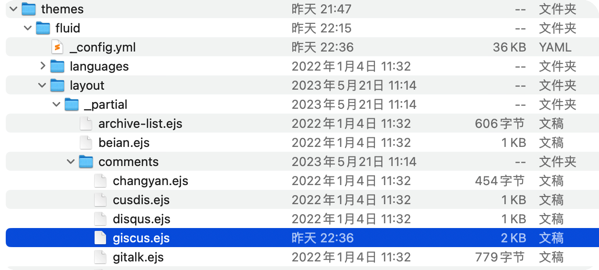
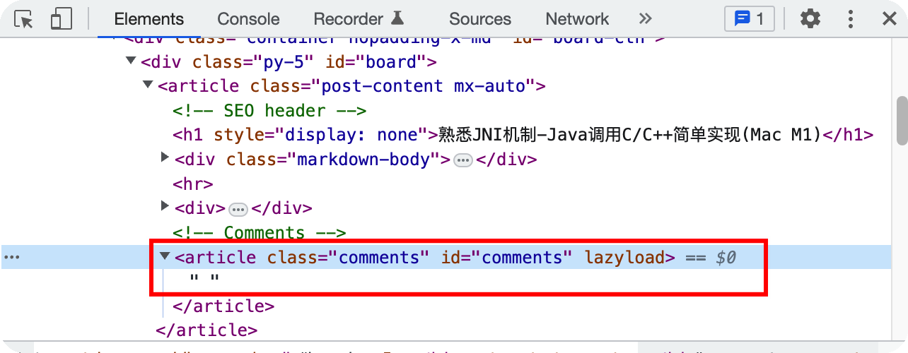
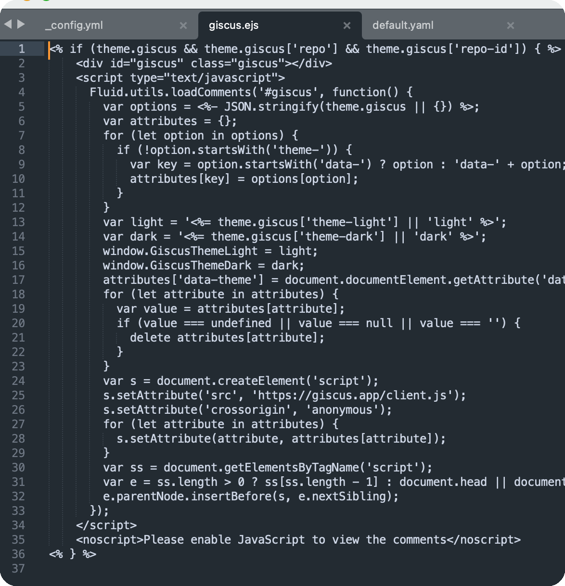
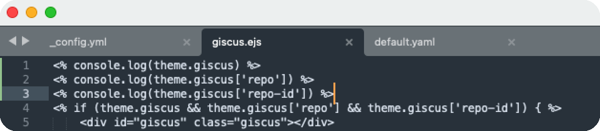
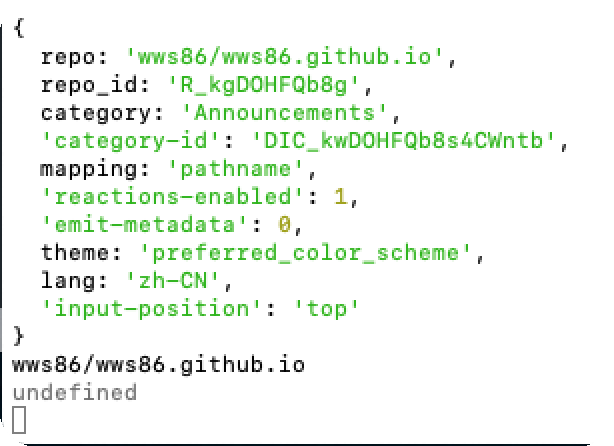

Hexo Fluid 配置 Giscus 问题📝
Hexo Fluid 配置 Giscus 问题📝
配置Giscus评论模块，原本是一个步骤明确的过程，但在我的Fluid + Giscus配置过程中出现了一个不易察觉的配置问题，让人一度怀疑版本兼容问题。
怀疑版本兼容问题的原因是在我的本地搭建Hexo Fluid时，Fluid主题还未支持Giscus 评论系统，最近发现了Giscus希望能加在Blog上。
在Fluid配置指南的引导下，我没有找到直接加入Fluid的_config.yml配置代码, Giscus官方文档是JS配置，需要从JS调到yml，没有配置经验，便打算找一下大家的配置代码，找到了以下配置代码：
1 | |
想着将代码粘到_config.yml中，再配置一下
1 | |
就OK了. 没想到Bug在这里就写下了.
因为Fluid版本较旧, 还需要在Fluid的layout comments模块下加入Giscus的ejs模版文件, 此文件可以在Fluid的GitHub中找到. 如下图所示:

至此, hexo g不再报错, 配置完成.
本地运行hexo s, 发现comments模块没有加载!
配置出问题了? 但是hexo 可以正常运行.
在网络上找了能找到的相关文章, 好像都没有这样的问题出现.
调试查找问题
查看html源代码, 原来js没有加载Giscus评论.

既然没有加载, 那么就要判断是否执行到了giscus.ejs.

可以看到 giscus.ejs开头有一if判断
1 | |
在if判断之前打印一下就可以看到代码的执行.
在 Node.js 的环境中，可以通过在 <% %> 标签内使用 JavaScript 代码来实现。
1 | |
加入打印之后的giscus.ejs,如下:

运行打印输出,如下:

第三个变量theme.giscus['repo-id']竟然没有打印!
找到了问题出现的地方.
原来在网络上找到的Giscus的yml配置代码, 并不是与Fluid相匹配的, 而是blog/node_modules/hexo-next-giscus/default.yaml中的默认模版. Fluid的配置代码是
1 | |
如果不仔细看, 可能一下看不出default.yaml与_config.yml的区别:
在_config.yml中Key是repo-id,而default.yaml中Key是repo_id
按照Fluid的配置风格修改后, Giscus评论模块出现~
本博客所有文章除特别声明外，均采用 CC BY-SA 4.0 协议 ，转载请注明出处！